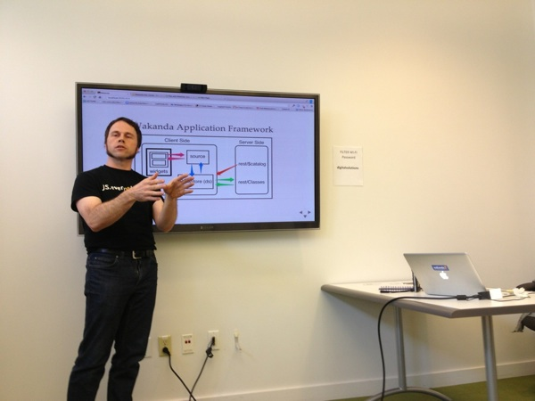

Some of my 2013 Talks
In my role at 4D I am a Developer Advocate I speak a bit at meetups and conferences.
Here are my slides and notes for 2013. After the event I will add some more information about the talk to the slides so that they act a bit like a journal.
This repo is hosted as a website at http://2013-talks.lyle.troxell.com .
-Lyle
Upcoming Talks
- 2013-11-26-27 4D Summit EU, Paris France
Past Talks
- 2013-11-19 4D Dev Conf, Munich Germany - Glass Talk
- 2013-11-19 4D Dev Conf, Munich Germany - 4D Mobile Talk - keynote file
- 2013-10-25 JS.everywhere(2013), San Fransisco, CA - JS in Glass - my talk
- 2013-10-25 JS.everywhere(2013), San Fransisco, CA - hosting event - Generic Slides
- 2013-10- 4D Summit, Los Vegas, NV - hosting event
- 2013-10-10 Responsive Design vs Adaptive Design - my Slides ResponsiveAdaptive.html - at eBay, Moderator
- 2013-10-5/6 Silicon Valley Code Camp - Slides CodeCamp.html - SlideShare
- 2013-09-12 Digital Arts and New Media, University of California, Santa Cruz - [http://github.com/lyle/DANM.JOY]
- 2013-07-24 NoVa.JS, Washington DC - NoVa.JS Meetup - NoVaJS.html
- 2013-07-25 NYC.JS, New York, NY - NYC.JS Meetup - NYCJS.html
- 2013-06-14 Web-5 Conference, Béziers, France - web-5.html
- 2013-05-21 Seattle JS - seattle.html
- 2013-05-20 Seattle Web App Developers Group - seattle.html
- How to Run a Front-end Engineering Team - Great WebDev Debates for April 18th - At PayPal, I was the moderator.
- 2013-03-19 Lyle Leaves UCSC, Santa Cruz
Got any photos of an event I participated in? Send me a pull request! or just email. - Thanks
